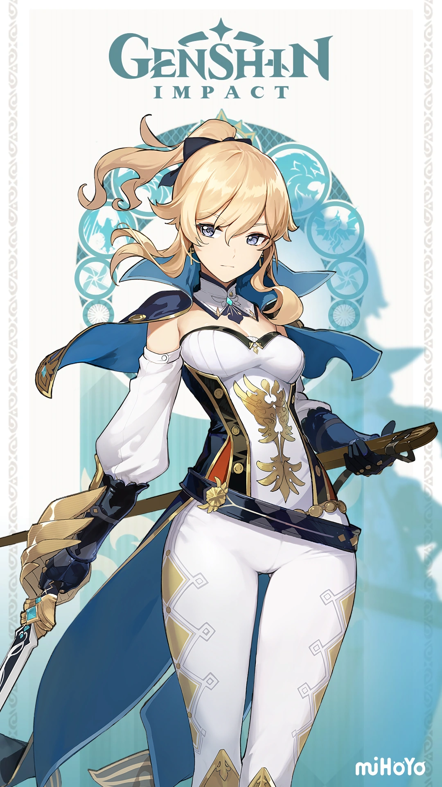
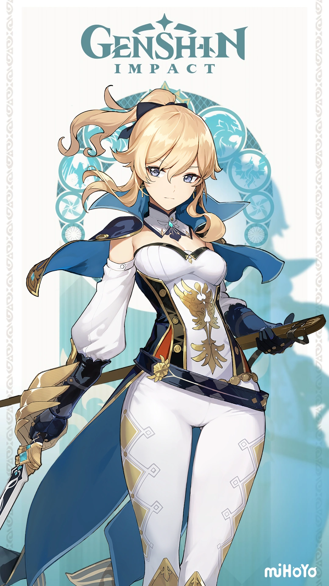
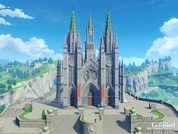

Mondstadt
La Capital de la Libertad al noreste de Teyvat. Entre cadenas montañosas y planicies amplias, el viento de libertad trae consigo el aroma de diente de león y acaricia el Lago de Sidra, llevando a la ciudad en medio del lago la bendición y el favor de Barbatos. Es la Primera de las Siete Naciones de Teyvat siendo representada por el elemento Anemo
Más detalles
La Ciudad De Mondstadt
Mondstadt es una nación libre gobernada por sus ciudadanos. La influencia de Barbatos, el Arconte Anemo, se basa en la libertad y la música.

Estatua de Los Siete
Uno de los sitios más emblemáticos de la región es La Estatua de Los Siete , que se encuentra en el centro de la ciudad y representa al Arconte Anemo.

Caballeros de Favonius
Los Caballeros de Favonius son la principal fuerza de protección en Mondstadt. Jean, la gran maestra interina, lidera con justicia y sabiduría.
 

Biblioteca de Mondstadt
Es la Biblioteca con más libros de todas las tierras del norte. Todos los libros están disponibles para el público, menos los de la sección restringida. La Biblioteca de Mondstadt, también conocida como Biblioteca de los Caballeros de Favonius, es una de las salas de la Sede de los Caballeros de Favonius, ubicada en la ciudad de Mondstadt.
Catedral de Favonius
La Catedral de Favonius, es una gran catedral dirigida por la Iglesia de Favonius que adoran al Arconte Barbatos.
Restaurante "El Buen Cazador"
¡El lugar más animado de la ciudad! Bueno, después de la taberna, claro... El restaurante es el sitio favorito de los glotones de Mondstadt. Si no pudiste conseguir una mesa, ¡tienes la opción de pedir para llevar!

Taberna "El Obsequio Del Ángel"
La taberna fue establecida y financiada por el antiguo Viñedo del Amanecer. Según Charles, el cantinero, una pequeña porción de los licores en las bodegas son absorbidos por los barriles y también se evaporan durante la destilación, por lo que los cerveceros a menudo se refieren a esta porción perdida como "el obsequio a los ángeles". De ahí el nombre de la taber: El Obsequio del Ángel. El Obsequio del Ángel es una taberna que se encuentra en la Ciudad de Mondstadt. La taberna vende alimentos a base de bebidas que se pueden comprar hablando con Charles.


Gremio de Aventureros (Mondstadt)
El Gremio de Aventureros te recibira con brazos abiertos nuestra anfitriona Katheryne para conllevarte a un sin numero de misiones encargos y sobretodo, Recompensas exclusivas para el aventurero o viajero (Disponibles en el juego desde la 1.0), exparcidas por to Teyvat.
Viñedo del Amanecer
Meseta de la Ventisca
Enclavada en la tierra al suroeste de Mondstadt se encuentra el viñedo que ha transmitido el legado de los vinos y sidras tradicionales de Mondstadt durante generaciones.
Las uvas cultivadas aquí se utilizan para producir una variedad de vinos que son populares en todo Teyvat. Los productos de cada año se dividen, y una parte se vende localmente dentro de Mondstadt, el resto se vende a través de la ruta comercial que se encuentra al sur de la ciudad.

Espinadragón
Espinadragón es una región lanzada en la Versión 1.2, siendo parte del evento «El Príncipe de la Caliza y el Dragón». Está ubicada al sur de Mondstadt, lo que lo hace reconocible por sus ciudadanos, como lo citó Mona en el evento «Estrellas que no regresan». Hay algunas peculiaridades en la forma en que la nieve se acumula pero nunca se derrite en la montaña.
Guarida de Stomterror
La Guarida de Stomterror es uno de los lugares con una sensación de soledad,sufrimiento y melancolia esto lo respalda muy bien por que alli se resguarda un dragón que protegió la ciudad pero su pueblo lo rechazó... ¿Lógraras descubrir quien es?.

Personajes e ¿"Historia"?
Proximamente...
Musica, Dominios, Jefes y artefactos
Proximamente...